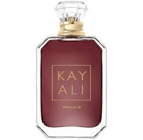

Kyali Vanilla 28
Kayali Vanilla 28 is a warm, rich, and addictive fragrance that wraps you in a soft blend of creamy vanilla, brown sugar, and amber. With subtle floral notes and a smooth finish, it’s both cozy and sensual—perfect for layering or wearing on its own. This sweet yet sophisticated scent is a signature favorite for those who love elegance with a hint of indulgence.